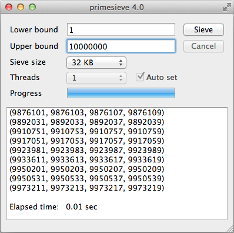
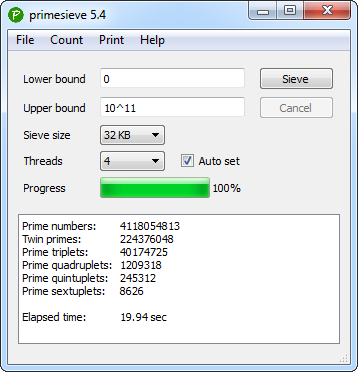
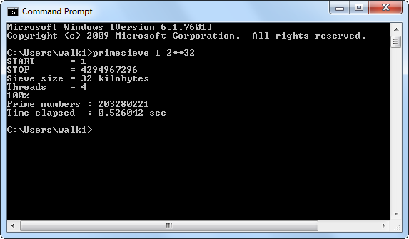
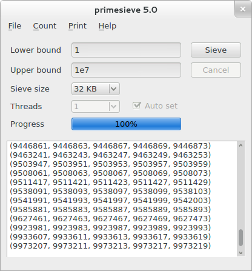
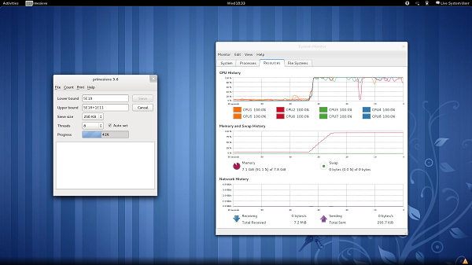

Screenshots
Printing prime 4-tuplets on Mac OS X.
Counting prime numbers and prime k-tuplets (twin primes, prime triplets, ...) on Windows 7.
Counting primes with the primesieve console application on Windows 7.
Printing prime 5-tuplets on Linux (Gnome 3).
Stressing a quad-core Intel Core i7-920 CPU with 8GB RAM on Linux Fedora 15 64-bit.
Generating 20-digit prime septuplets (7-tuplets) on an Amazon EC2 Cluster Compute Instance (2x Intel Xeon E5-2670, 60.5 GB) with the primesieve console application.